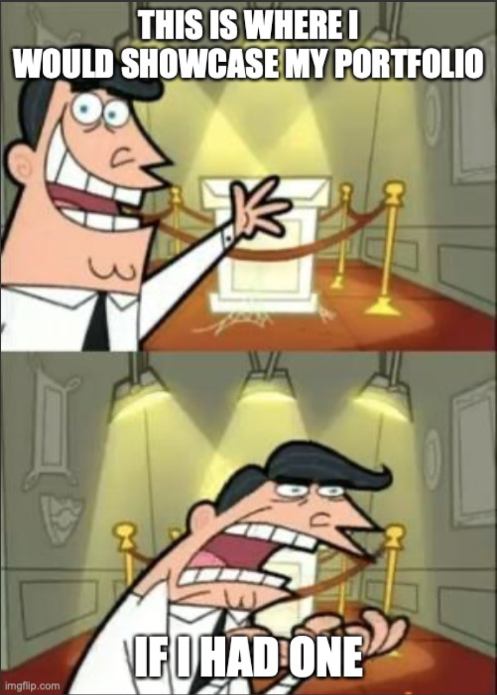
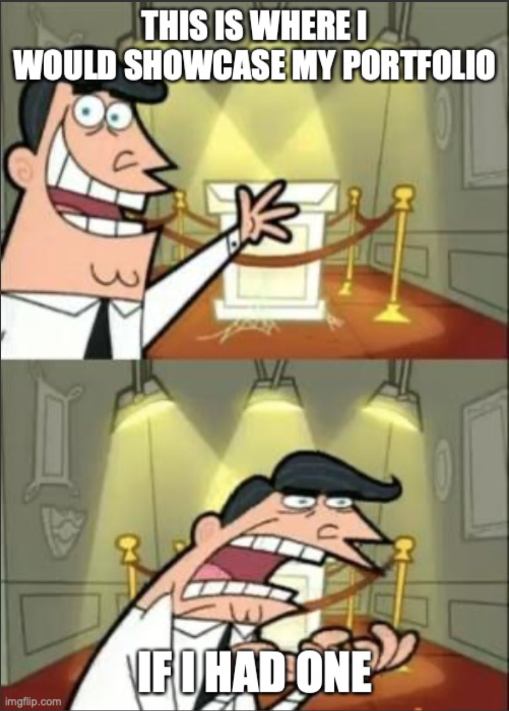

Portfolio
Portfolio page is currently under development...
Portfolio page is currently under development...
In my role as a student assistant at the Polyteknisk Boghandel og Forlag and publishing house, I was responsible for several key tasks that ensured efficient operations and a positive customer experience. I handled inventory management, where I received, checked, and registered new deliveries of books and other products. Additionally, I was in charge of organizing and maintaining the warehouse, which involved keeping track of stock levels, ensuring optimal storage of products, and making sure the store was always well-stocked. I also had direct customer interaction, where I assisted customers in finding the right books and products, answered questions, and provided personalized service that met their needs. Furthermore, I managed online orders, where I packed, processed, and shipped orders, ensuring that customers received their items quickly and accurately. My experience has equipped me with strong skills in logistics, customer service, and retail, all of which have contributed to smooth and customer-focused operations.
As a substitute teacher, I taught students from kindergarten through 10th grade in various subjects. My role involved planning and delivering lessons, where I adapted the teaching materials to different age groups and academic levels. I taught subjects such as Danish, mathematics, English, science, and social studies, working with both individual tasks and group work to foster students' learning and engagement. For the last three months, I worked full-time, taking over all teaching responsibilities from a regular teacher. During this period, I taught English and mathematics, as well as provided specialized instruction for students with dyslexia. I was also responsible for creating a safe learning environment, ensuring classroom structure and discipline. Additionally, I demonstrated flexibility by stepping into different classes and situations, often on short notice, which required quick adaptation and strong communication skills. My experience as a substitute teacher has developed my pedagogical skills, my ability to manage various teaching situations, and my commitment to supporting students' development and well-being.
During my Software Engineering studies at DTU, I gained a solid understanding of the core principles of software development. I worked with various programming languages, including Java, Python, TypeScript, and R, as well as development environments, gaining experience in both frontend and backend development. Additionally, through coursework, I acquired comprehensive knowledge of databases, algorithms, data structures, software architecture, and design patterns. My education also provided me with practical experience in agile development methodologies, version control, and teamwork through project work. I have honed my problem-solving skills and my ability to translate complex requirements into effective software solutions. For my bachelor’s project, I collaborated with a company to develop a new interface for their equipment. I applied user experience engineering principles to create wireframes and assisted in identifying the necessary functionalities that the new interface should include.
During this study, I acquired fundamental knowledge of human anatomy and physiology, along with an understanding of the most common diseases in Denmark, including their prevalence, etiology, pathogenesis, and symptoms. Throughout my education, I developed a solid foundational knowledge of the anatomy and physiology of the healthy human body, as well as the most common diseases in Denmark, focusing on their causes, mechanisms, and symptoms. I also gained a basic understanding of cell biology, biophysics, and biochemistry, and their relevance to human biology. I obtained theoretical knowledge and practical experience in the design and validation of pharmacokinetic models, analysis of population dynamics and disease spread, and mathematical modeling of biological issues. Additionally, I have worked with machine learning, numerical methods, and bioinformatics.
During my time at DTU, I served as a Vektor, playing a key role in the student onboarding process. As a Vektor, I was responsible for helping new students settle into DTU through social events and activities, including planning and organizing the introductory camp. This experience helped me develop strong collaboration and communication skills, as well as enhance my social capabilities.
As a volunteer with CISV, I participated in their "Village" program, which brought together groups from 13 different nationalities. In my role as a Leader, I was responsible for four eleven-year-old children over the course of the four-week program. This experience allowed me to develop excellent teamwork skills with other leaders from around the world and coordinate activities for all participating children.
Here diplomas should be showcased